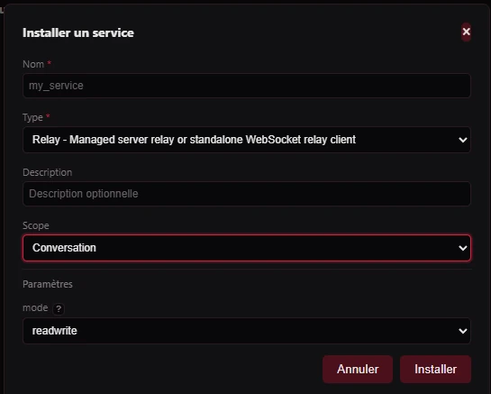
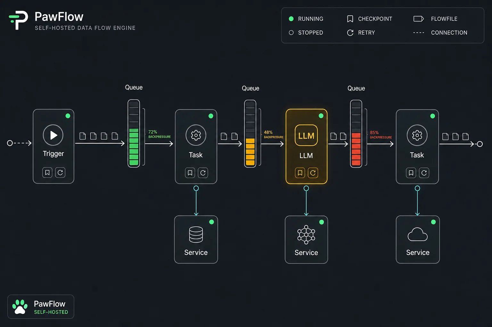
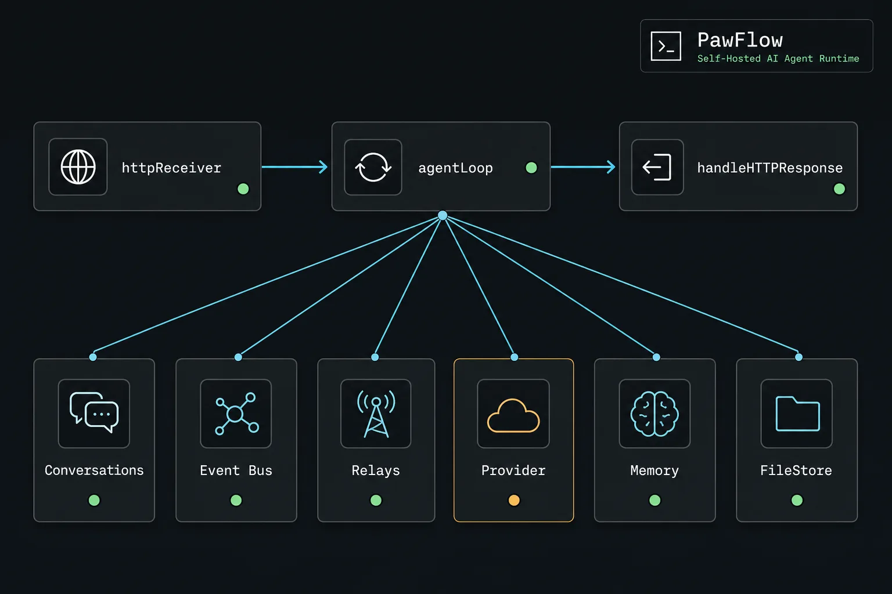
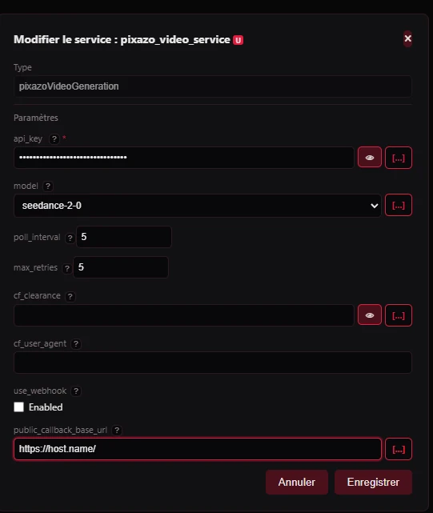

Install and relays
From first server to controlled workspaces.
Install script + wizard
Run the release installer and reach the first conversation
Objective: show the full first-run path from the shell script to the PawFlow conversation screen with assistant selected.
terminal Copy
Loading current release command...
Gateway screen Open https://localhost:19990/install, accept the local certificate for private installs, enter the bootstrap key, then replace it with your real Private Gateway key.
Admin screen Create the first admin account. This user owns the initial runtime resources and can configure global agents/services.
LLM provider screen Select the first provider: Codex app-server, Claude Code interactive, Antigravity/Agy, Gemini CLI, Anthropic, OpenAI, or an OpenAI-compatible endpoint.
Summarizer screen Choose the summarizer service and context limits so compaction is explicit and does not flood provider context.
Runtime screen Deploy the main PawFlow Agent flow: httpReceiver to agentLoop to handleHTTPResponse.
Conversation screen Open the starter conversation, confirm assistant is selected, send a small prompt, and verify streaming output.
Expected result: PawFlow is running on the selected port, the wizard is complete, and the first conversation can call the selected provider.
Desktop, noVNC, audio, screen tools
Use Desktop Relay with noVNC, audio, screen, and see
Objective: explain the operator view and the agent-visible tools for desktop work.
Install and connect Relay Desktop on the workstation that owns the GUI session. Open Desktop Relay from webchat and choose the remote desktop or local desktop when allow_local is intentionally enabled. Use noVNC for operator observation/control; enable audio only for sessions that need sound playback or capture. Let agents inspect UI state through screen screenshots or see multimodal analysis, then approve clicks/typing/shell/file actions separately. Keep desktop permissions narrower than filesystem permissions when the task only needs visual inspection. Expected result: the user can watch the same desktop surface the agent sees, while agent actions remain routed through auditable screen/see/tool calls.
Read desktop docs
PawCode installer
Install PawCode and attach a terminal agent to PawFlow
Objective: install the PawCode CLI package and continue a PawFlow conversation from a terminal.
Download the PawCode asset matching the release version shown above. Install the package or unzip it into a directory on PATH. Run PawCode, point it at the PawFlow server, and authenticate with the same user. Select an existing conversation or create a new one; relays, memories, and tool policies stay server-side. Expected result: terminal work and webchat share the same PawFlow conversation instead of creating an isolated provider session.
PawCode usage
Start PawCode with explicit server and Private Gateway settings
Objective: make the terminal client predictable across localhost, private deployments, and gateway-protected routes.
terminal Copy
# Local server
PAWFLOW_SERVER="https://localhost:19990" pawcode --dir .
# Gateway-protected server
PAWFLOW_SERVER="https://pawflow.example.com" \
PAWFLOW_GATEWAY_KEY="your-private-gateway-key" \
pawcode --dir .
# Common flow after login
pawcode auth login
pawcode --dir .Use PAWFLOW_SERVER for the exact PawFlow origin, including scheme and port. Use PAWFLOW_GATEWAY_KEY when Private Gateway protects API/SSE routes; keep it in your shell profile or secret manager, not in prompts. Run pawcode auth login if the browser auth token is missing or expired. Use /conv and /resume <id> to continue webchat conversations. Use /new --agent assistant --llm <service> --relay <relay_id> when creating a terminal-first conversation with an existing relay binding. Expected result: PawCode connects to the intended PawFlow server, passes Private Gateway cleanly, and uses the same relay/tool permissions as webchat.
Read PawCode docs
VS Code plugin
Install the PawFlow VS Code extension from a release VSIX
Objective: make the VS Code client installable without opening the extension source folder or running a development host.
Download pawflow-vscode-<version>.vsix from the current release. In VS Code, run Extensions: Install from VSIX... and choose the file. Set pawflow.serverUrl to the PawFlow server, for example https://localhost:19990. Set pawflow.gatewayKey when Private Gateway is enabled. Run PawFlow: Login , then use the PawFlow activity bar view or editor context menu actions. Expected result: VS Code is another PawFlow client over the same backend, not a separate relay or hidden agent runtime.
Relay Desktop installer
Install Relay Desktop for GUI workstations
Objective: connect a desktop machine to PawFlow with filesystem, terminal, browser, noVNC, audio, and screen capabilities scoped by relay profile.
Install the Relay Desktop package for the workstation OS. Add the PawFlow server URL and authenticate with the user that owns the conversation. Register a workspace root and choose whether local host access is allowed. Confirm the relay appears connected in PawFlow before enabling desktop or shell tools. Expected result: webchat can link the workstation relay and use Desktop Relay/noVNC for GUI tasks.
Relay CLI installer
Install Relay CLI for server and terminal workspaces
Objective: run a lightweight relay on machines that do not need the Desktop app.
Download the Relay CLI archive for the target machine. Unpack it and place the executable on PATH, or run it from the extracted directory. Authenticate against the PawFlow server and register a workspace root. Use Docker/container relay mode for isolated work, and enable local host mode only for trusted tasks. Expected result: the machine appears as a relay-backed filesystem/shell target without requiring a desktop session.
Install
Install PawFlow with Docker Objective: start a self-hosted PawFlow server and open the first-run wizard.
Open the current release downloads for Download the installer zip. Unzip it and run the install command shown in the quickstart. Open `https://localhost:19990/install`. Expected result: a starter conversation with `assistant` selected.
Open full quickstart 
Server relay
Install a managed relay server Objective: create the server-side relay service PawFlow uses for managed tools, diagnostics, and relay registration.
Install PawFlow and complete the first-run wizard. Open resources/services and add a `relay` service. Leave `token` empty for a managed server relay. Save and confirm health before attaching client relays. Expected result: PawFlow can broker filesystem, shell, screen, browser, and desktop-capable clients.
Read service docs Remote relay
Install a remote relay with Desktop or CLI Objective: connect the machine that owns the files, terminal, browser, or desktop to PawFlow.
Choose Relay Desktop for GUI workstations or Relay CLI for server/terminal machines. Install the package from the release downloads. Add the PawFlow server URL and gateway key/login. Register a workspace and link it to the webchat conversation. Expected result: the workstation appears as a selectable relay with explicit tool boundaries.
Read relay client docs Desktop
Open a desktop through a relay Objective: give an agent controlled access to a full desktop surface for UI work.
Start a relay with desktop/screen tooling enabled. Open the Desktop Relay view from webchat. If the relay uses `allow_local`, choose the local desktop where the host helper runs. Require approvals for screen, browser, shell, file, and delete operations. Expected result: the agent can inspect and operate a desktop while you watch the same session.
Read desktop docs Terminals
Open relay terminals from webchat Objective: debug or operate the environment attached to a conversation without leaving the browser.
Open the webchat workspace menu. Choose the Docker relay terminal for containerized workspace commands. Choose the local terminal only when `allow_local` is enabled intentionally. Use the relay server/runtime terminal for diagnostics and provider containers. Expected result: Docker, local host, and server runtime boundaries remain visible.
Read filesystem docs Agents
Configure the first LLM-backed agent Objective: connect the assistant to Codex app-server, Claude Code interactive, Antigravity/Agy, Gemini CLI, Anthropic, OpenAI, or a compatible endpoint.
Create or select an LLM service in the installer/resource panel. Use direct `openai`/`anthropic` for API keys, `codex-app-server` for Codex subscriptions, `claude-code-interactive` for Claude subscriptions, and `antigravity-interactive` for Gemini subscriptions. Set credentials through secrets or the matching OAuth credential provider. Send a small inspection task before allowing edits or shell. Expected result: streaming responses from the selected provider.
Read provider docs Editor
Open VS Code/code-server on the relay workspace Objective: review files manually while agents continue to work in the same conversation.
Link the target relay to the conversation. Open VS Code/code-server from the webchat workspace menu. Inspect diffs, run searches, or edit files directly in the browser editor. Ask the agent to explain or continue from the same relay workspace. Expected result: manual review and agent work share one workspace boundary.
Read VS Code docs Providers
Inspect interactive provider tmux sessions Objective: debug subscription-backed CLI providers without losing the conversation state.
Configure `claude-code-interactive` or `antigravity-interactive` for the selected agent. Open the provider runtime view or relay terminal from webchat. Inspect the tmux session when login, tool approval, or provider streaming needs attention. Return to the conversation after the provider state is healthy. Expected result: interactive CLI providers stay observable instead of becoming hidden subprocesses.
Read provider docs Identity, filesystems, and secrets
Connect accounts without leaking credentials. OAuth
Set up an OAuth provider Objective: let users sign in through a supported external identity provider.
Create the OAuth application at the provider and copy the client id/secret. Set the redirect URI to your PawFlow callback URL, for example `https://your-host/auth/callback`. Add the provider in Auth Gateway or the installer OAuth step. Set allowed domains, default role, and auto-provisioning rules before exposing the login button. Google Google Cloud Console OAuth client, authorized redirect URI, email/profile scopes.
GitHub GitHub OAuth App, callback URL, optional org restrictions.
Microsoft Entra app registration, web redirect URI, user.read/email scopes.
X X/Twitter developer app, OAuth callback, profile/email permissions when available.
Meta/Facebook Meta app, Facebook Login product, valid OAuth redirect URI.
Amazon Login with Amazon security profile, allowed return URL.
Telegram BotFather bot plus allowed domain for Telegram login widget.
Generic Any OIDC/OAuth provider with authorize, token, userinfo endpoints.
Expected result: external users authenticate through PawFlow with predictable provisioning.
Read auth docs Filesystem
Add an rclone filesystem Objective: mount remote storage such as Google Drive or OneDrive into relay-backed tools.
Create an `rcloneOAuthCredentials` service for the backend, such as Google Drive or OneDrive. Add an `rcloneFilesystem` service that references the credential service. Link the filesystem service to the conversation or relay. Use `/remote/<service_id>` from relay shell/tools when the relay image includes rclone. Expected result: agents can read/write approved remote storage without storing raw OAuth tokens in prompts.
Read filesystem tools Config
Use variables and secrets Objective: keep reusable values visible and credentials encrypted.
Create variables for non-secret values such as model names, ports, feature flags, and environment labels. Create secrets for tokens, API keys, OAuth client secrets, webhooks, and package bindings. Reference variables through expression language and secrets through service configuration instead of prompt text. Review scope: global, user, conversation, package, or flow. Expected result: flows, services, and packages can be configured without leaking credentials into conversation context.
Read expression docs Repositories, skills, tools, and marketplace
Manage the PawFlow depots as product resources. Depots
Understand PawFlow resource depots Objective: know where reusable definitions live and how scope changes visibility.
Use the resource panel to browse agents, flows, skills, prompts, tools, MCP servers, services, themes, task definitions, and packages. Choose the right scope: global for shared defaults, user for personal assets, conversation for local experiments. Promote stable resources upward only after review. Keep secrets separate from imported packages and marketplace assets. Expected result: teams can reuse resources without mixing experiments with production defaults.
Read resource tools Skills
Create, import, and use skills Objective: give agents task-specific instructions and assets on demand.
Create a skill with `/skill add @name "prompt"` or from the resource panel. Import reviewed external skills from supported marketplaces or GitHub trees. Assign skills explicitly to agents with `/skill assign @agent @skill`. Run a skill immediately with `/skill run` or `//skill-name`; agents load full content with `load_skill` only when needed. Expected result: specialized knowledge is available without bloating every prompt.
Read skill commands Extend
Add MCP servers, hooks, tools, flows, and prompts Objective: extend agents with controlled capabilities.
Add MCP servers as opt-in resources and activate them only for the conversations that need them. Add tools for reusable actions, and document required inputs, side effects, and permissions. Add agent hooks for pre/post behavior where policy or automation must run around agent turns. Create prompts and flows as versioned resources so operators can reuse them without copying chat text. Expected result: extensions are explicit, reviewable, and scoped.
Read tool catalog Packages
Import, export, and update PFP packages Objective: move signed bundles of agents, flows, skills, themes, tools, task providers, and service providers between environments.
Inspect a `.pfp` before installing; review capabilities, object list, required secrets, and risk flags. Install only selected objects and bind package secrets to existing PawFlow secrets. Export stable local resources into a `.pfp` or `.pfpdir` for review. Use update/uninstall through the package registry instead of overwriting resources manually. Expected result: reusable assets can be distributed with provenance and explicit consent.
Read package docs Marketplace
Use marketplace assets safely Objective: discover packages or skills without trusting remote metadata blindly.
Add registries from the package dialog or package commands. Search by capability, package id, author, or object type. Confirm download size/hash before fetching remote `.pfp` files. Install only reviewed objects and keep marketplace secrets bound locally. Expected result: marketplace discovery stays separate from execution trust.
Read publisher guide Themes
Select, create, and import themes Objective: customize the webchat without editing product code.
Select a global or conversation theme from the chat theme menu. Create a theme resource with `theme.json`, CSS, and optional assets. Import a theme from a PFP package or resource depot. Test readability across chat, resource panels, terminals, and modals before sharing globally. Expected result: teams can brand or specialize workspaces while preserving accessible controls.
Read theme docs Flows, tasks, and plans
Turn agent work into explicit automation. 
Flows
Understand PawFlow flows Objective: know when to use deterministic flow execution instead of a free-running agent loop.
Model work as a graph of tasks connected by relationships. Use services for external systems, credentials, LLMs, filesystems, and media providers. Use triggers for schedules, webhooks, messages, files, or manual starts. Keep LLM calls explicit through agent or `inferLLM` tasks where variability is acceptable. Expected result: recurring work runs with visible routing, retries, checkpoints, and backpressure.
Read architecture docs 
Agent flow
Understand the main PawFlow Agent flow Objective: recognize the runtime path behind the starter webchat.
`httpReceiver` accepts chat/API events. `agentLoop` builds context, calls the selected LLM service, executes tools, and streams events. `handleHTTPResponse` returns the immediate HTTP response while background streaming continues. Conversation store, event bus, memory, relays, and FileStore keep the UI synchronized. Expected result: operators can debug whether an issue is HTTP, context, provider, tool relay, or persistence.
Read agent system docs Plans
Use tasks and PawFlow plans Objective: coordinate work that needs status, verification, or recurrence.
Use tasks for assigned work, scheduled loops, or recurring objectives. Use `create_plan` for multi-step work that needs approval before execution. Update plan steps as they move through pending, in progress, blocked, and done. Use verification when another agent or user must approve the result before continuing. Expected result: long work becomes observable instead of a hidden chat thread.
Read task commands Automation
Create a deterministic daily digest flow Objective: use an agent to design a recurring automation, then let a JSON flow run it.
Prompt the agent to create a daily digest with source fetch, LLM summary, and delivery. Review the generated task graph. Keep LLM calls explicit through `inferLLM` tasks. Deploy the flow once the shape is correct. Expected result: CRON and flow tasks execute without a free-running agent in the loop.
Read the example Security, context, and gateway
Keep access narrow and context intentional. Context
Edit context and memory before the next turn Objective: keep long-running conversations precise instead of letting stale state accumulate.
Open the context editor to inspect what the selected agent will receive. Remove stale snippets or add focused context before a sensitive task. Open the memory editor to review durable memories and correct bad facts. Send the next turn only after the visible context matches the task. Expected result: the agent runs with auditable short-term context and curated long-term memory.
Read cognitive tools docs Context
Configure compact and summarizer settings Objective: control how long conversations stay usable without flooding the provider context.
Set `max_context_size` on the LLM service to match the real model window. Choose a summarizer service during install or in services. Use `compact_threshold_pct` for proactive compaction, or disable proactive compaction with `0` when manual control is preferred. Review compact summaries and memory extraction after long sessions. Expected result: conversation history stays durable while provider prompts stay bounded.
Read agent context docs Gateway
Configure Private Gateway and bans Objective: protect exposed routes before a demo or internet-facing install.
Enable Private Gateway during install or from gateway services. Replace the bootstrap key immediately; `RoyBetty` is only temporary. Set rate limits, failed-attempt cooldowns, and ban behavior for repeated failures. Use skins only as UX; do not treat them as security controls. Expected result: public routes require an explicit gateway step and abusive clients can be slowed or banned.
Read security model Security
Run a private demo safely Objective: show PawFlow without exposing unrestricted host access.
Use HTTPS or a trusted reverse proxy. Enable Private Gateway for internet-facing routes. Prefer Docker relay mode for untrusted workloads. Restrict agent tools and require approval for shell/edit/delete/desktop operations. Expected result: a useful demo with explicit trust boundaries.
Read security model 
Media
Add image, video, and audio services Objective: enable multimodal tools without embedding large media payloads in context.
Add the provider you need: image, video, audio/music, 3D, lipsync, upscaling, or speech-to-video. Store API keys as secrets or choose a local provider. Use clear service ids such as `image.default`, `video.default`, or `audio.default`. Run a tiny generation test and confirm the output is a FileStore URL or relay file path. Expected result: agents return reusable files instead of base64 blobs.
Read media docs Voice
Set up TTS and STT Objective: enable read-aloud, browser dictation, voice cloning, and speech tools.
Add a TTS service such as `supertonicTTS`, `voicebox`, `luxTTS`, or a compatible hosted provider. Add an STT service such as `openaiCompatibleSTT` or `voicebox`. For Supertonic, use fast private local TTS; for Voicebox, configure the local endpoint/profile. Test the speaker and microphone buttons, then test `speak`, `clone_voice`, or `speech_to_video` if needed. Expected result: webchat can speak and transcribe, and agents can generate voice artifacts.
Read voice docs Troubleshooting
Debug the first blocked install Objective: isolate common setup failures without guessing.
Run the doctor script first. Check Docker daemon access and selected port availability. Confirm provider credentials are stored as secrets or login-backed services. Check relay connection state before testing filesystem tools. Expected result: the failing layer is visible: host prerequisites, server, provider, or relay.
Read Docker docs